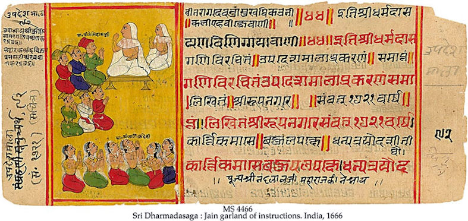

mailto:payer@payer.de
Zitierweise | cite as:
Payer, Alois <1944 - >: Sanskritkurs. -- 25. Lektion 25. -- Fassung vom 2008-12-15. -- URL: http://www.payer.de/sanskritkurs/lektion25.htm
Erstmals hier publiziert: 2008-12-15
Überarbeitungen:
Anlass: Lehrveranstaltungen 1980 - 1984
©opyright: Dieser Text steht der Allgemeinheit zur Verfügung. Eine Verwertung in Publikationen, die über übliche Zitate hinausgeht, bedarf der ausdrücklichen Genehmigung des Verfassers
Dieser Text ist Teil der Abteilung Sanskrit von Tüpfli's Global Village Library
Falls Sie die diakritischen Zeichen nicht dargestellt bekommen, installieren Sie eine Schrift mit Diakritika wie z.B. Tahoma.
Die Devanāgarī-Zeichen sind in Unicode kodiert. Sie benötigen also eine Unicode-Devanāgarī-Schrift.
| Außer bei Maskulina / Neutra auf -a sowie
den Pronomina sind im Singular in allen Deklinationsklassen die
Formen des Ablativ (पञ्चमी) mit denen des Genetiv (षष्ठी) identisch. Außer bei den Personalpronomina sind in allen Deklinationen im Plural die Formen des Ablativ mit denen des Dativ (चतुर्थी) identisch. |
Jetzt erkennen Sie den Grund für die Reihenfolge der Kasus (विभक्ति) im Sanskrit: sie sind so angeordnet, dass gleichlautende Formen möglichst beieinander - bzw. untereinander - stehen.
| Ablativ Singular der Maskulina / Neutra
auf -a दव Abl. sg. देवात् |
Frage-, Relativ- und Demonstrativpronomina:
| Ablativ Singular Maskulinum / Neutrum |
Ablativ Singular Femininum |
|
|---|---|---|
|
किम् |
कस्मात् |
कस्यास् |
| यद् | यस्मात् | यस्यास् |
| तद् | तस्मात् | तस्यास् |
| एतद् | एतस्मात् | एतस्यास् |
| इदम् | अस्मात् | अस्यास् |
|
"Der Ablativ bezeichnet dasjenige, das fest bleibt, wenn etwas davon weggeht." Pāṇini 2,3,28 + 1,4,24 |
| Der Ablativ steht vor allem auf die Fragen "Woher?", "Warum?". |
| 1. Der Ablativ bezeichnet also den
Ausgangspunkt, die Herkunft und den Stoff: Beispiele:
Der Ablativ kann daher auch die Person bezeichnen, von der man etwas kauft, hört, wünscht usw. Beispiele:
|
| 2. Der Ablativ steht bei Verben mit den
Bedeutungen "abhalten von", "schützen vor", "verteidigen gegen",
"sich fürchten vor": Beispiel:
|
| 3. Der Ablativ bezeichnet den Grund oder
die Ursache: Beispiele:
Nomina, die nicht Feminina sind, können, um den Grund einer Tätigkeit zu bezeichnen, im Instrumentalis (तृतीया) oder Ablativ (पञ्जमी) stehen. Feminina stehen in diesem Sinn in der Regel im Instrumentalis, können aber gelegentlich auch im Ablativ stehen. |
| Will man im Singular (eindeutig)
ausdrücken, dass das Wort in ablativischer Bedeutung verwendet wird,
kann man an den Wortstamm das Suffix -तस् anhängen, das Adverbien
mit meist ablativischer Bedeutung bildet (auf die Frage "Woher?"): Beispiele:
Das Suffix -तस् tritt auch an Pronominalstämme:
|
1. Relativsätze
| 1. Relativsätze drücken oft eine kausale
(begründende), konsekutive (folgernde) oder finale (bezweckende)
Beziehung zum Hauptsatz aus. Formen des Relativpronomens, die als kausale Konjunktion dienen:
Beispiel:
|
2. हि
| Hauptsätze kann man mittels der Partikel
हि "denn, weil" miteinander verknüpfen. Ein Satz mit हि (das nicht
an erster Stelle stehen darf, sondern in Prosa an zweiter Stelle
stehen muss) gibt eine Begründung an entweder für den vorhergehenden
Satz oder für den darauffolgenden Satz: Beispiel:
|
3. Instrumentalis (तृतीया)
| 3. Neben dem Ablativ (पञ्चमी) wird
der Instrumentalis (तृतीया) zur Angabe des Grundes oder der Ursache
verwendet. Bei femininen Nomina ist der Instrumentalis im
Allgemeinen obligatorisch. Beispiel:
|
4. Nomina
4. Daneben kann man selbstverständlich
Begründungen auch ausdrücken durch Konstruktionen mit
+ Genetiv (षष्ठी) oder als Hinterglied von Komposita: Beispiel:
|
5. इति
| 5. Das Motiv für eine Tätigkeit kann man
als Gedanken mit इति angeben: Beispiel:
|
त्यज् 1P त्यजति verlassen, aufgeben, im Stich lassen
Fut. त्यक्ष्यति
Pass. त्यज्यते
PPP त्यक्त
Inf. त्यक्तुम्
Absol. 2: -त्यज्यdavon:
त्याग m.: Aufgeben, Verzicht, Meiden
दार m. pl. (!!!): Ehefrau
द्रव्य n.: Gegenstand, Habe, materieller Besitz, Geld
धान्य n.: gedroschenes Getreide
Abb.: धान्यम्
Khanna
[Bildquelle: appaji. --
http://www.flickr.com/photos/appaji/2205110691/. -- Zugriff am 2008-12-15.
--
 Creative
Commons Lizenz (Namensnennung)]
Creative
Commons Lizenz (Namensnennung)]
धृ 1U धरति : halten, festhalten
Fut. धरिष्यति
Pass. ध्रियते
PPP धृत
Inf. धर्तुम्
Absol. 2: -धृत्यdavon:
धर्म m.: das, was fest ist und fest hält = Dharma
नित्य ३ : ständig, beständig, ewig
नित्यम् Adv.: stets, beständig immer
प्रज्ञा f.: Weisheit, Erkenntnis
प्रदान n.: Geben, Spenden ; Gabe, Spende
मद् 4 P माद्यति (!) : sich freuen, sich an etwas (Instr., Gen., Lok.) berauschen
Fut. मदिष्यति
Pass. मद्यते
PPP मत्त
Inf. मदितुम्davon:
मद m.: Rausch, Sinnenrausch = Sinneslust
मान m.: Einschätzung, Ansehen, Ruhm, Ehre, Stolz, Dünkel, Minderwertigkeitsgefühl ; (man misst sich an anderen)
यदि Konjunktion: wenn
न्याय m.: Regel, Prinzip, Methode, Urteil (jurist.), Logik (aus ni + i +a)
अन्यथा Adv.: anders, sonst, fälschlich, unrichtig
या 2P याति, यान्ति = गम्
Pass. यायते
PPP यात
Inf. यातुम्
Absol. 2: -याय
दारिद्र्य n. = दरिद्रस्य भावः
प्रदान n. = दान
शास् 2P शास्ति, शासति (3. pl.) : befehlen, lehren, bestrafen
Pass. शिष्यते
PPP शिष्ट ३ : gelehrt
Absol 1.: शासित्वा / शिष्त्वाdavon:
शिक्षा f.: Wissenschaft, Unterricht ; Phonetik
स्तेन m.: Dieb
स्तेय n.: Diebstahl
किल्बिष n.: Schuld, Beleidigung, Sünde
विना Postposition: ohne, außer (mit Akk., Instr., Abl.)
मूल n.: Wurzel
Abb.: मूलानि
Varanasi
[Bildquelle: oceandesetoiles. --
http://www.flickr.com/photos/ocean_of_stars/2544053669/. -- Zugriff am
2008-12-15. --


 Creative
Commons Lizenz (Namensnennung, keine kommerzielle Nutzung, share alike)]
Creative
Commons Lizenz (Namensnennung, keine kommerzielle Nutzung, share alike)]
लिप् 6U लिम्पति (!): bestreichen, beschmieren
Fut. लेप्स्यति
Pass. लिप्यते
PPP लिप्त
Inf. लेप्तुम्davon:
लिप्ति f.: Bestreichen, Schreiben, Schrift

Abb.: लिप्तिः
Jaina-Manuskript
[Bildquelle: Wikipedia, Public domain]
वर्ष n.,m.: Regen, Regenzeit, Jahr
वह् 1U वहति : führen, fahren, wehen (Wind)
Fut. वक्ष्यति
Pass. उह्यते
PPP ऊढ
Inf. वोढुम्
Absol 2: -उह्यवह् + वि 1P विवहति : wegführen (nämlich die Braut aus dem Elternhaus) = heiraten
davon:
विवाह m.: Wegführen, Heirat einer Frau (Instr., saha) (zur Heirat siehe Basham, Wonder S. 166 -171)
Abb.: विवाहः
मुंबई
[Bildquelle: barnism. --
http://www.flickr.com/photos/barnism/3079837348/. -- Zugriff am 2008-12-15.
--


 Creative
Commons Lizenz (Namensnnenung, keine kommerzielle Nutzung, keine Bearbeitung)]
Creative
Commons Lizenz (Namensnnenung, keine kommerzielle Nutzung, keine Bearbeitung)]
नी + वि 1U विनयति : wegführen, unterrichten, erziehen
davon:
विनय m.: Entfernen, Erziehen, Zucht, buddhist.: Ordensdisziplin, Ordensrecht
विज्ञान n.: Erkenntnis, Kenntnis
विष्टि f.: Arbeit, Frondienst
Abb.: विष्टिः
[Bildquelle: Ray Witlin / World Bank. --
http://www.flickr.com/photos/worldbank/2182943983/. -- Zugriff am
2008-12-15. --


 Creative
Commons Lizenz (Namensnnenung, keine kommerzielle Nutzung, keine Bearbeitung)]
Creative
Commons Lizenz (Namensnnenung, keine kommerzielle Nutzung, keine Bearbeitung)]
वृध् 1Ā वर्धते : wachsen, größer werden
Fut. वर्धिष्यते
Pass. वृध्यते
PPP वृद्ध : erwachsen, alte, vermehrt
Inf. वर्धितुम्davon:
वृद्धि f.: Wachsen, Wachstum, Dehnstufe (aus: vṛdh-ti)
सामर्थ्य n.: das seinem Zweck Entsprechen
स्वभाव m.: Wesen, Natur, Charakter
हर्ष m.: (Aufrichten der Körperhärchen), Freude
हिरण्य ३ : golden ; n.: Gold, Geld, Reichtum
Abb.: हिरण्यम्
Chennai = சென்னை
[Bildquelle: Dilip Muralidaran. --
http://www.flickr.com/photos/dilipm/2423883232/. -- Zugriff am 2008-12-15.
--
 Creative
Commons Lizenz (Namensnennung)]
Creative
Commons Lizenz (Namensnennung)]
अणु ३ : dünn, fein, dehr klein ; m.: Atom
गोदान n.: Geben von Kühen / einer Kuh ; zweite Haarschnittzeremonie (ein संस्कार)
A) Ergänzen Sie die Deklinationsbeispiele von Lektion 16, Wiederholungsübung A durch Hinzufügen von 4. Dativ (चतुर्थी) und 5. Ablativ (पञ्चमी). Bilden Sie außerdem Deklinationsreihen mit allen bisher gelernten Formen zu
१. सन्त् (m., n.)
२. महान्त् (m., n.)
३. यद् (m., n., f.)
Lernen Sie diese Deklinationsparadigmen auswendig!
B) Übersetzen Sie und lösen Sie die Komposita in Sanskrit auf:
गुर्वादेशाद्रामो ग्रामान्नगरं गत्वा साधुगृहं प्रविश्य साधुमुपस्थायालं क्रोधेनेति वक्ति ॥१॥
गुरोरधर्मः श्रोतुं न शक्यत इति श्रुत्या च स्मृतिभिश्चोद्यते ॥२॥
क्षत्रिया जनाञ्छत्रुभ्यो रक्षितुमर्हन्तीति क्षत्रियधर्मः ॥३॥
कृतयज्ञदोषत्वाद्ब्राह्मणो धनं लब्धुं नार्हति ॥४॥
धनलाभहेतोस्ते वैश्या व्रतं कृत्वा ब्रह्मचर्यं चरन्ति ॥५॥
बुद्द्धाश्चार्हन्तश्च दुःखान्मुक्ताः । मुञ्चन्ती बुद्धिर्हि तैः प्राप्ता ॥६॥
लोभेन च क्रोधेन च मोहेन च जना दुष्यन्ति । ततः प्राप्तकाला नरकं पतन्ति ॥७॥
क्षत्रियो महानगरतः शत्रुग्रामं योद्धुं शूरयोधानानयति ॥८॥
पुत्रलाभकारणाद्ब्राह्मणी व्रतं चरति ॥९॥
लब्धपुत्रत्वाद्द्विजेन महासुखमाप्तम् ॥१०॥
विष्णुर्भक्तान्मरणात्पाति ॥११॥
रामाद्विना = रामं विना = रामेण विना ॥१२॥
साधोः शिक्षा गुणाय संपद्यते नासाधोः ॥१३॥
रामः कृष्णाय तिष्ठति ॥१४॥
सुखेन गच्छति ॥१५॥
अलं भयेन ॥१६॥
लोकादधिको हरिः ॥१७॥ (हरि m. = विष्णु / कृष्ण)
Abb.: लोकादधिको हरिः
श्रीकृष्णः
[Bildquelle: Wikipedia, Public domain]
यतो यतो निवर्तते
ततस्ततो विमुच्यते ।
निवर्तनाद्धि सर्वतो
न वेत्ति दुःखमण्वपि ॥१॥
Erklärung: सर्वतस् = sarva "jeder, alle" + -tas ; अणु = Nom., Akk. sg. neutr.
मानाद्वा यदि वा लोभात्
क्रोधाद्वा यदि वा भयात् ।
यो न्यायमन्यथा ब्रूते
स याति नरकं नरः ॥२॥
भवन्ति नरकाः पापात्
पापं दारिद्र्यसंभवम् ।
दारिद्र्यमप्रदानेन ॥३॥
शासनाद्वा विमोक्षाद्वा
स्तेनः स्तेयाद्विमुच्यते ।
अशासित्वा तु तं राजा
स्तेनस्याप्नोति किल्बिषम् ॥मनुस्मृति ८.३१६॥ ॥४॥
Erklärung: राजा = Nom. sg. zu राजन् m. = नृप
1. कौटिलीयार्थशास्त्र १.४.१. über den Nutzen der Ökonomie:
वार्त्ता धान्यपुशुहिरण्यकुप्यविष्टिप्रदानादौपकारिकी ॥
2. कौटिलीयार्थशास्त्र १.५. über die Ausbildung eines Fürsten:
तस्माद्दण्डमूलास्तिस्रो विद्याः ॥१॥ विनयमूलो दण्डः प्राणभृतां योगक्षेमावहः ॥२॥ कृतकः स्वभाविकश्च विनयः ॥३॥ क्रिया हि द्रव्यं विनयति नाद्रव्यम् ॥४॥ शुश्रूषाश्रवणग्रहणविज्ञानोहापोहतत्त्वाभिनिविष्टबुद्धिं विद्या विनयति नेतरम् ॥५॥ ... ॥ वृत्तचौलकर्मा लिपिं संख्यानं चोपयुन्ञ्जीत ॥७॥ वृत्तोपनयस्त्रयीमान्वीक्षिकीं च शिष्टेभ्यो वार्त्तामध्यक्षेभ्यो दण्डनीतिं वक्तृप्रयोक्तृभ्यः ॥८॥ ब्रह्मचर्यं चा षोडशाद्वर्षाद् ॥९॥ अतो गोदानं दारकर्म चास्य ॥१०॥ नित्यश्च विद्यावृद्धसंयोगो विनयवृद्ध्यर्थम्, तन्मूलत्वाद्विनयस्य ॥११॥ ... ॥ श्रुताद्धि प्रज्ञोपजायते प्रज्ञाया योगो योगादात्मवत्तेति विद्यानां सामर्थ्यम् ॥१६॥ ... ॥ विद्याविनयहेतुरिन्द्रियजयः कामक्रोधलोभमानमदहर्षत्यागात्कार्यः ॥१.६.१.॥
Erklärung der im obigen Text rot hervorgehobenen Wörter:
1.5.1. तिस्रस् : Nom, Akk, fem. zu त्रि "drei"
1.5.2. प्राणभृताम् : Gen. pl. m. zu प्राणभृत् m. "Lebewesen"
1.5.5. इतरम् Akk. sg. mask. zu इतर ३ "anderer"
1.5.7. कर्मा : Nom. sg. mask. zu कर्मन् neutr. "Tat, Werk" ; उपयुञ्जीत : OPtativ 3. sg. Ā zu upa-yuj 7 "sich aneignen": "er möge sich aneignen"
1.5.8. वक्तृप्रयोक्तृभ्यस् Abl., Dat. pl. zu वक्त्र्प्रयोक्तृ (इतरेतरद्वन्द्व) "Theoretiker und Praktiker"
1.5.9. षोडश ३ : "sechzehnter"
1.5.10. कर्म Nom., Akk. sg. zu कर्मन् n. "Tat"
1.5.16. धि Sandhiform zu हि ; आत्मवत्ता f.: "Selbstbesitz"
1.6.1. कार्य ३ "zu tuendes, was getan werden muss"
Zu Lektion 26